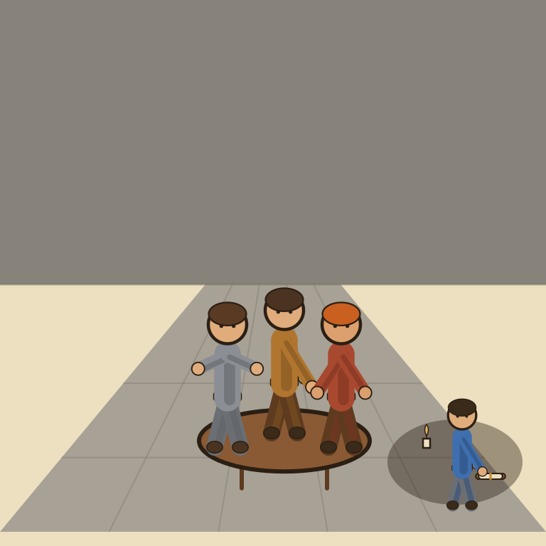

Granola

Nobody saw the scribe come in. By the time the council adjourned, the minutes were already perfect.
Granola is a meeting notetaker that skips the awkward bot in your call: it runs on your desktop or phone, listens to system audio, and blends it with your own rough typed notes into a clean summary after the meeting ends. The Basic plan is free and covers real usage, but caps how far back your meeting history goes. Business, at $14 per user per month, removes that cap and adds Granola's stronger models plus real integrations (Notion, HubSpot, Slack, Attio, Zapier). The verdict: an excellent pick if the bot-on-the-call problem genuinely bothers you or your clients, less essential if you're fine with Fireflies' unlimited free minutes.
Granola's biggest trick isn't the AI summary, it's convincing an entire meeting that no software is watching. Everyone still knows. Nobody has to look at a bot icon in the participant list and pretend otherwise.
- Value for price7/10
- Capability8.5/10
- Ease of use9.5/10
- Trial safety8/10
Granola differs from bot-based competitors like Otter.ai or Fireflies by never joining the call as a visible participant: it records system audio locally while you jot your own shorthand notes during the meeting, then merges the two into a structured summary once you're done, closer to how a sharp human notetaker actually works than a raw transcript dump.
Pricing breakdown
- Basic ($0): AI meeting notes, capped meeting history, AI chat within and across meetings, shared folders, custom note templates, multi-language support, opt out of model training
- Business ($14/user/mo, billed monthly): everything in Basic, plus unlimited meeting notes and history, access to Granola's advanced AI models, deeper integrations (Attio, Notion, Slack, HubSpot, Affinity, Zapier), centralized billing, MCP integration, API access
- Enterprise ($35/user/mo): everything in Business, plus SSO, admin controls, priority support and usage analytics, org-wide auto-deletion periods, team-wide opt out of model training
Where it falls short
Basic's meeting-history cap means Granola quietly becomes less useful the longer you use it for free, right when you'd actually want to search back through old notes. It's also a downloadable app on every platform rather than a lightweight browser tab, so it's one more piece of software installed and running in the background compared to a bot-based competitor you can just invite and forget. Business pricing is per seat too, which adds up fast if you're coordinating a small team of contractors rather than working solo.
Pros
- No visible bot joining calls, works with Zoom, Google Meet, Microsoft Teams, Slack Huddles, even FaceTime
- Blends your own typed notes with the audio for a sharper summary than transcript-only tools
- Genuinely cross-platform as of 2026: Mac, Windows, iPhone, and Android
Cons
- Free plan's meeting-history cap makes older notes unsearchable without upgrading
- Business pricing is per seat, which adds up fast for a small team of contractors
- No web app, requires installing a desktop or mobile app on every device you use
Common questions
Does Granola actually join my meetings as a bot?
No. Granola runs quietly on your Mac, Windows, iPhone, or Android device and records system audio directly, nothing visible joins the call, so there's no bot icon on the participant list to explain to clients or teammates.
Is the free Basic plan enough to actually use Granola?
For light use, yes, you get full AI notes and cross-meeting chat. The catch is meeting history: several independent reviews report Basic caps saved notes around 25, so once you're a few weeks in and want to search back further, Business becomes the real plan.
What do I actually get for the extra $14 a month on Business?
Unlimited meeting history and notes, access to Granola's more advanced AI models, deeper integrations with tools like Notion, HubSpot, and Slack, and API access, mainly aimed at people who live in back-to-back calls and need the notes to be genuinely searchable later.